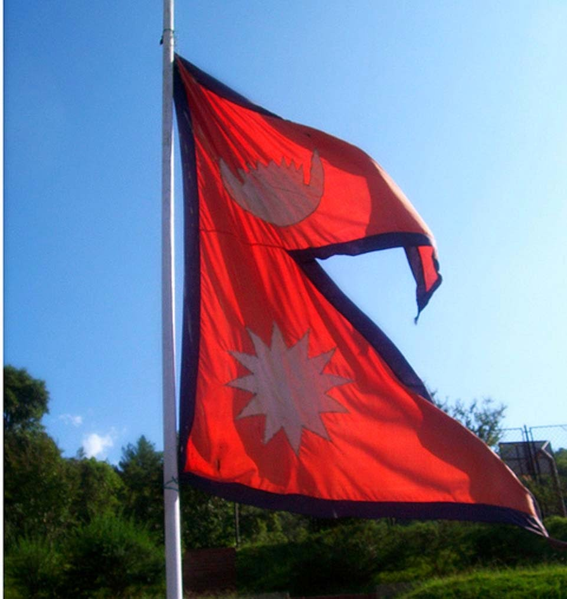
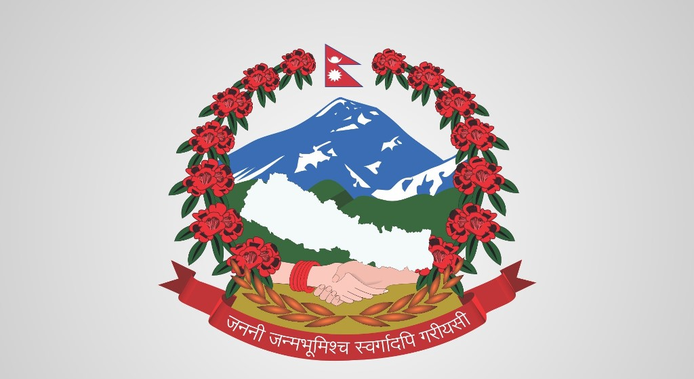

Nepal
Nepal , formerly the Federal Democratic Republic of Nepal,is a landlocked country in South Asia. It is mainly situated in the Himalayas, but also includes parts of the Indo-Gangetic Plain, bordering Tibet of China to the north, and India in the south, east, and west, while it is narrowly separated from Bangladesh by the Siliguri Corridor, and from Bhutan by the Indian state of Sikkim. Nepal has a diverse geography, including fertile plains, subalpine forested hills, and eight of the world's ten tallest mountains, including Mount Everest, the highest point on Earth. Nepal is a multi-ethnic, multi-lingual, multi-religious and multi-cultural state, with Nepali as the official language. Kathmandu is the nation's capital and the largest city. |
Flag of Nepal National Emblem of Nepal |